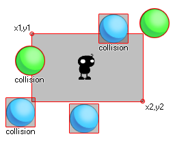

Collision_rectangle utilise les quatre premiers arguments (x1, y1, x2, y2) pour définir une zone dans la pièce actuelle, puis vérifie si un objet défini par l'argument "obj" est en collision avec cette zone. Cette collision peut être vérifiée avec précision ou non, et vous pouvez également choisir de vérifier si l'instance qui exécute le code lui-même est exécutée ou non. Considérez cette image: 
Ici, l'instance au milieu utilise un rectangle de collision pour rechercher des objets boule. Maintenant, les bleus n'ont pas de cadre de sélection précis et, comme vous pouvez le constater, même si le sprite ne touche pas le rectangle, la collision se produira quand même (même si vous définissez l'option précise dans la fonction sur true) Le cadre de sélection de cette image-objet recouvre le paramètre collision_rectangle. D'autre part, les boules vertes ne seront considérées en collision que si le sprite réel chevauche le rectangle. Rappelez - vous, pour des collisions précises à considérer à la fois l'image - objet de l' objet et la fonction de collision doit avoir marqué comme précis sur. Il convient également de noter que la valeur de retour de la fonction peut être l'id de l'une quelconque des instances considérées comme étant en collision.
collision_rectangle(x1, y1, x2, y2, obj, prec, notme);
| Argument | La description |
|---|---|
| x1 | La coordonnée x du côté gauche du rectangle à vérifier. |
| y1 | La coordonnée y de la partie supérieure du rectangle à vérifier. |
| x2 | La coordonnée x du côté droit du rectangle à vérifier. |
| y2 | La coordonnée y du bas du rectangle à vérifier. |
| obj | L'objet à vérifier pour les collisions d'instance. |
| prec | Si le contrôle est basé sur des collisions précises ( true, qui est plus lent) ou son cadre de sélection en général ( false, plus rapide). |
| notme | Si l'instance appelante, le cas échéant, doit être exclue ( true ) ou pas ( false ). |
Instance id or noone
var inst;
inst = collision_rectangle(50, 50, 200, 100, obj_Ball, false,
true);
if inst != noone
{
with (inst) instance_destroy();
}
Ce code court utilise collision_rectangle pour vérifier une zone de la pièce comprise entre 50x, 50y (en haut à gauche du rectangle) et 200x, 200y (en bas à droite du rectangle) pour une instance d'un objet appelé "obj_ball". Il stocke la valeur de retour dans une variable temporaire qui est ensuite vérifiée pour voir si cette valeur est un identifiant d'instance ou le mot clé noone. Si ce n'est pas Noone alors il utilise l'ID d'instance stockée pour détruire l'objet.